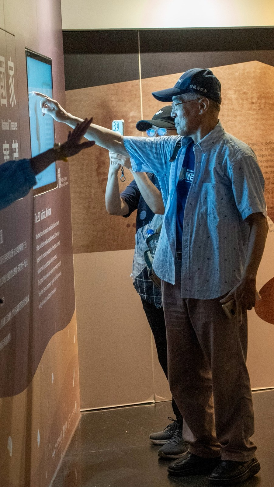
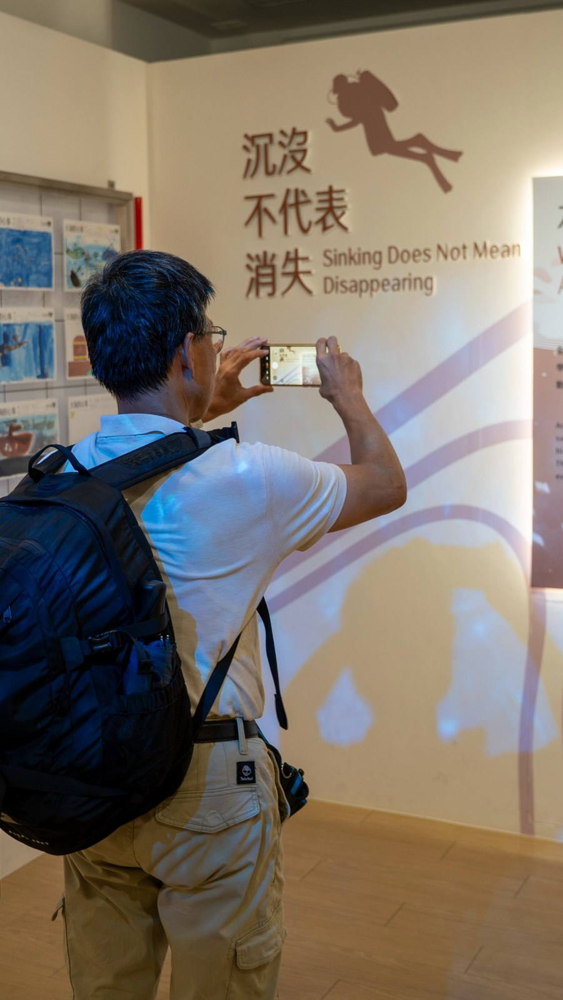
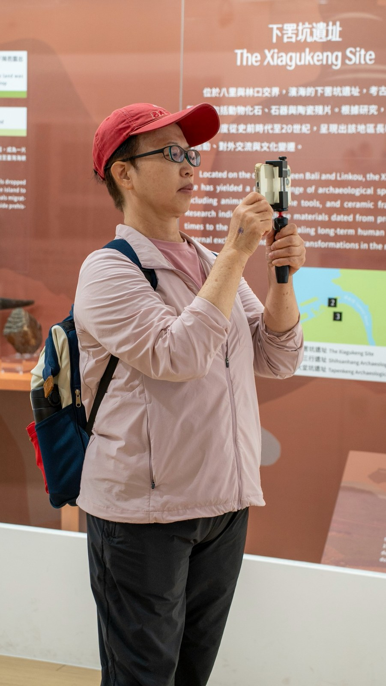
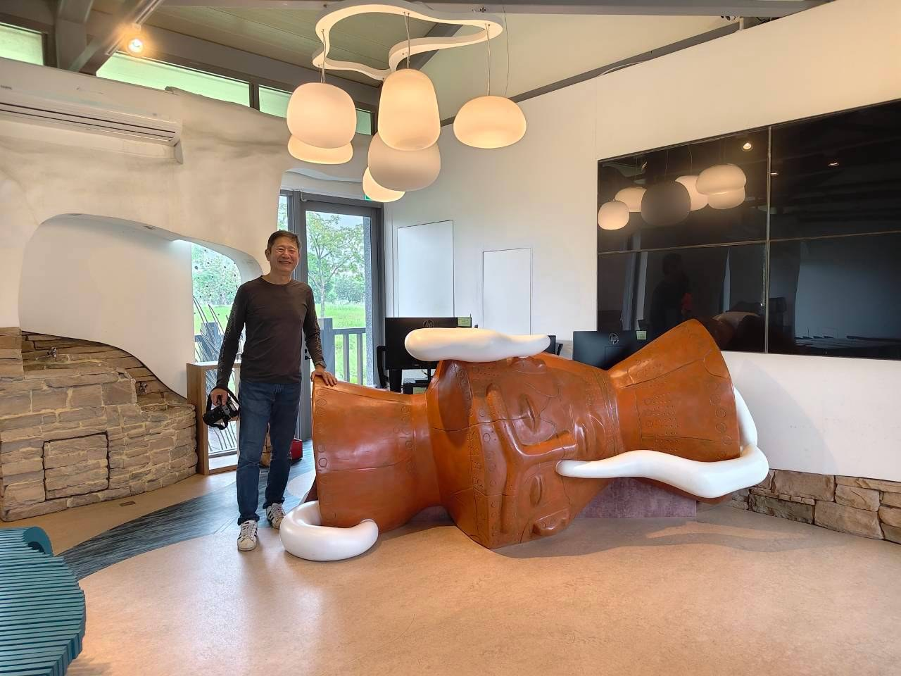
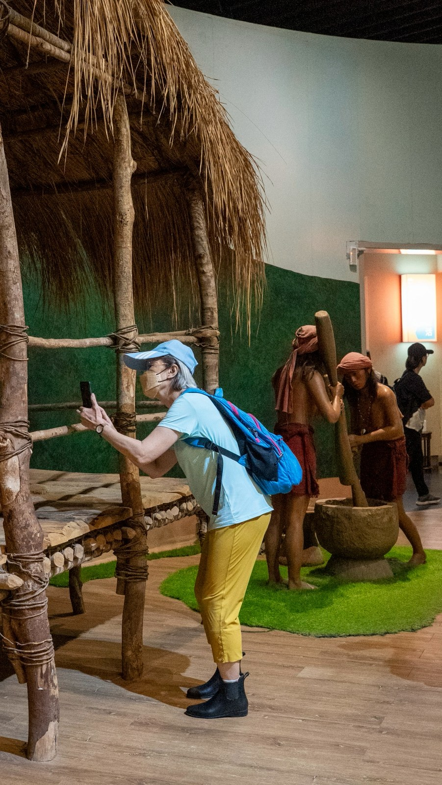

現場走讀
我們一起走過的地方
每次出發前，老師會先發下一份「田野調查暨空拍影像採集工作通告單」，集合地點、觀察重點、安全叮嚀，一頁交代完整。揣著這份行前功課上路，我們心中滿是雀躍，等著與那片土地相見。
我們放飛空拍機，掠過凱達格蘭族曾經生活的故地。課堂上讀過的地名與歷史，到了現場忽然有了溫度，與眼前的山勢、河道、街廓緩緩相連。升空之後，視野頓時開闊，河流孕育聚落的脈絡盡收眼底，彷彿也瞥見先民依水而居的剪影；落回地面，先前匆匆掠過的角落，這才慢慢浮現。

老師不只領我們觀察，還教我們如何掌鏡。起飛的方位、前進的快慢、鏡頭的推移與轉折，他逐一示範運鏡，讓影像隨著移動緩緩鋪陳，收進動人的俯瞰風光。
鏡頭裡除了高空的景致，還有同學們投入的模樣：有人屏息操作，有人在旁協助，有人毫無保留地交流心得。即使沒有自己的空拍機，老師也安排輪流上手，每個人都能親自飛一飛。這些時刻，是這門課最珍貴的部分。

出去空拍看天，也吃光線，偏偏我們常遇上雨。計畫得隨之改變，但大家總會彼此提醒、守望相助，平安收隊。幾次下來，彼此越走越近，也累積出屬於這個班級的「革命情感」。
十三行博物館的參訪，讓我們領略另一種尺度。
河岸上的俯瞰，記錄的是大地的全貌；走進展場，我們停下腳步，端詳文物與生活情境，試著貼近千百年前人們的日常。講解、提問、眼前的細節，交織成一幅生動的圖景，讓紙上的文字有了重量，也滋養了後來的創作。





這一頁，我想用照片收藏走讀途中的點點滴滴：一同操作器材、在展櫃前駐足凝望，還有一路同行、相互守護的背影。
心得感想謝謝懷嵩老師
進入教室，懷嵩老師帶我們研讀文獻、學習方法，引導我們把史料與走讀的所得，化為完整的影音創作。內容紮實，討論熱烈，每當聽見旁人拋出新的想法，我都會發現，原來問題還能換個角度理解。這樣的收穫，真的十分難得。
還要謝謝同學們。大家來自四面八方，各有才華，也樂於把所長拿出來與人共享。從最初的陌生，到共同走讀、討論，我們漸漸長出了默契，成了彼此十分安心的夥伴。

有同學說，我們這班就像「博士班」。這句話，恰如其分地道出了每個人的傾力以赴。許多人原本沒有影音背景，卻從零開始摸索：學剪輯、練構圖，花時間蒐集資料、整理素材，再把心中的想法，逐步化為作品。
望著這些成果，我由衷敬佩。每一件都有創作者獨到的巧思，也映照出走讀所見如何轉為靈感。同學們從同一堂課出發，飛越同一片土地，最後說出了各自的故事。這些嘔心瀝血的結晶，理當被更多人欣賞。
能與大家攜手走到終點，我覺得自己真的很幸運。
關於這個網站為什麼我想為大家留下紀錄
課程雖已結束，那些情景卻始終捨不得放下：河岸邊的熱切交談、雨中相互叮嚀的聲音、空拍機離地的剎那、展廳裡入神的側臉，還有一件件投入無數時間與心力所做出來的作品。
在我參與過的所有專案裡，這是最認真的班級，也是收穫最豐的課程。我想把這一切好好留下，不只為了自己，更為了這份悉心的指導、夥伴的付出。這個網站，是大家的最佳紀錄。
往後無論何時回頭翻閱，都能想起：我們曾這樣相伴走過，穿越先民的故里，留下一段值得銘記的時光。
於是，有了這個網站。